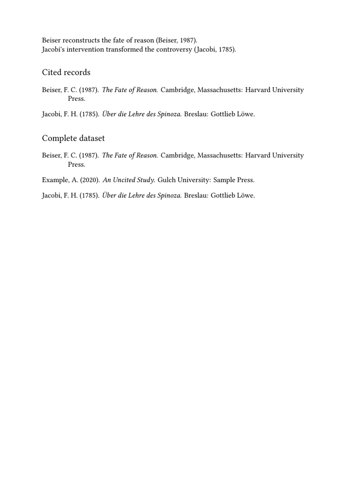
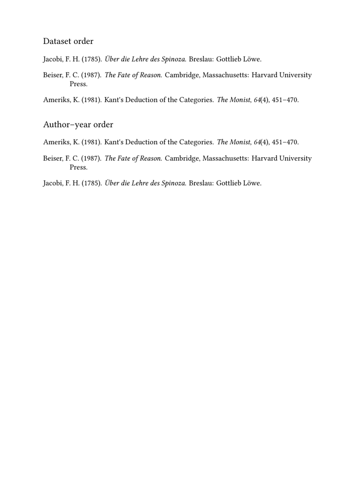
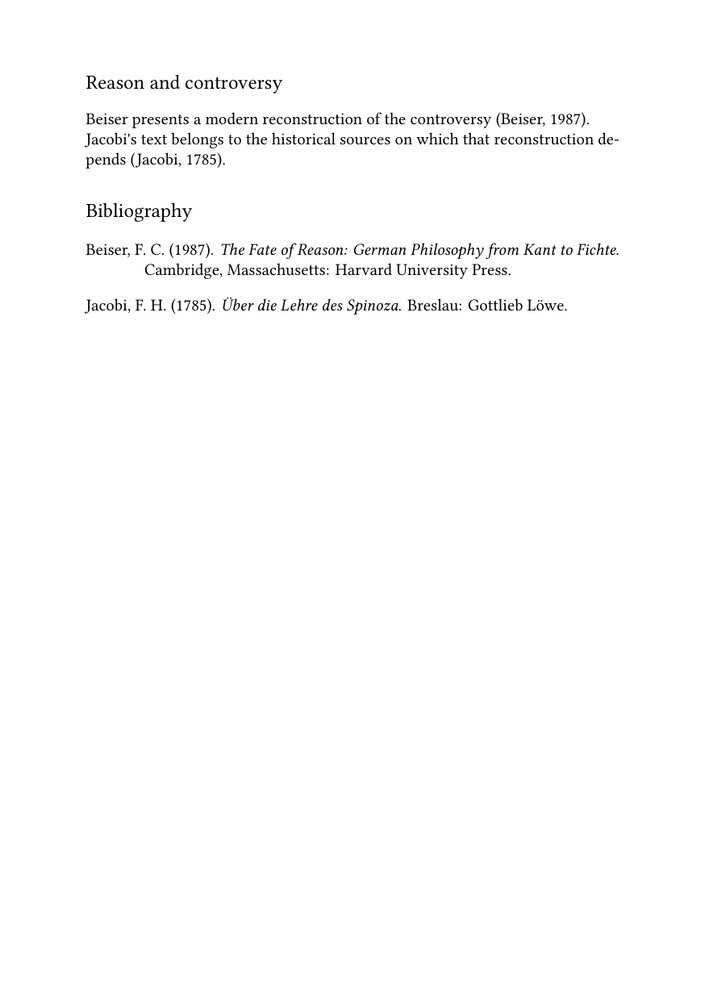

🚧 Warning: this page is under construction. Please do not edit it while this banner is displayed.
Bibliography guides — Guide 2 of 4
← Previous: Guide 1 — Creating a bibliography and citing sources · Current: Guide 2 — Understanding datasets, styles, renderings, selection, and sorting · Next: Guide 3 — Creating local and multiple bibliographies →
Contents
- 1 1. Understanding datasets, styles, renderings, selection, and sorting
- 2 2. Why the basic example is not enough
- 3 3. The bibliography workflow as separate operations
- 4 4. Bibliographic sources and datasets
- 5 5. Bibliographic specifications and styles
-
6
6. Citation form and bibliography style are related but distinct
- 6.1 6.1. Displaying a complete entry at the point of citation
- 6.2 6.2. Using the complete entry in a note
- 6.3 6.3. Displaying the entry also registers its use
- 6.4 6.4. Why a manually written note is different
- 6.5 6.5. MWE: a complete reference in a note and in the bibliography
- 6.6 6.6. What belongs in this guide, and what comes later
- 7 7. What is a rendering?
- 8 8. Selecting records with method
- 9 9. Sorting records with sorttype
- 10 10. Putting the elements together
-
11
11. Common confusions and diagnostic questions
- 11.1 11.1. Changing sorttype does not add missing records
- 11.2 11.2. Changing method does not change punctuation
- 11.3 11.3. A dataset is not a bibliography list
- 11.4 11.4. A specification is not a data file
- 11.5 11.5. A record can be loaded but not selected
- 11.6 11.6. A record can be selected but sorted unexpectedly
- 11.7 11.7. A citation may resolve while the wrong list is placed
- 11.8 11.8. A familiar style name may not identify the expected implementation
- 11.9 11.9. The comment and the code may disagree
- 12 12. A practical diagnostic table
- 13 13. Bibliographies, indexes, and multiple processing passes
- 14 14. What this guide has established
- 15 15. Where to go next
- 16 16. Related pages and commands
1. Understanding datasets, styles, renderings, selection, and sorting
The first guide showed how to load bibliographic records, cite them, and place a bibliography. That basic workflow is sufficient for a small document, but it does not yet explain why a particular record appears, why another record is omitted, why the list follows a particular order, or how the same data can be presented according to different bibliographic conventions.
This guide separates the main operations performed by the ConTeXt bibliography subsystem.
By the end of the guide, you should be able to:
- distinguish a bibliographic source from a dataset;
- understand the role of a bibliographic specification;
- distinguish a citation alternative from a bibliography list;
-
understand how
alternative=entrydisplays and registers a record; - define and use a named rendering;
-
select records with
method; -
sort selected records with
sorttype; - understand why changing the sorting rule does not change the selection;
- understand why changing the selection method does not change the style;
- identify which layer must be changed when the output is not what you expect.
The main difficulty is not the syntax.
The difficulty lies in recognising that loading data, formatting citations, selecting records, sorting them, and placing a list are related operations, but they are not the same operation.
2. Why the basic example is not enough
A first bibliography may use only four commands:
\usebtxdataset[default][references.bib] \usebtxdefinitions[apa] \cite[authoryear][beiser1987] \placelistofpublications
This works, but it leaves several questions unanswered:
-
What exactly is the dataset named
default? -
Is a dataset the same thing as a
.bibfile? - What does the APA specification control?
- Why do cited records appear while uncited records may remain absent?
- How can every record in the dataset be printed?
- In what order are records displayed?
- Can one dataset be used to produce several lists?
- Can the same records be formatted differently without editing the data?
- Can a complete reference displayed in a note also be selected for the final
bibliography?
The following sections answer these questions by separating the workflow into its component parts.
3. The bibliography workflow as separate operations
The complete workflow can be represented as follows:
bibliographic source
|
v
dataset
|
+--------------------> citation
|
v
specification + rendering
|
v
selection with method
|
v
sorting with sorttype
|
v
bibliography placement
The main terms can be summarised in one table.
| Element | Main function | Typical command or setting |
|---|---|---|
| Bibliographic source | Stores bibliographic records in a file, buffer, Lua table, or XML structure. | references.bib, biblio.buffer
|
| Dataset | Makes a named collection of records available to ConTeXt. | \usebtxdataset
|
| Specification | Defines general conventions for citations and bibliography entries. | \usebtxdefinitions[apa]
|
| Citation | Retrieves and presents one or more records in the text or in a note; the
chosen alternative determines the local form. |
\cite[alternative=...]
|
| Rendering | Defines a named configuration for a bibliography list. | \definebtxrendering
|
| Selection | Determines which records belong in the list. | method=global, local, or dataset
|
| Sorting | Determines the order of the selected records. | sorttype=authoryear
|
| Placement | Inserts the resulting bibliography at a particular position. | \placelistofpublications
|
A useful diagnostic question
When the output is wrong, ask first:
- Is the record missing from the data?
- Is it missing from the dataset?
- Is it not selected?
- Is it selected but sorted unexpectedly?
- Is it present but formatted by an unsuitable specification?
- Is the correct rendering placed at the correct position?
4. Bibliographic sources and datasets
4.1. A file is not a dataset
A .bib file is a source of bibliographic data.
For example:
references.bib
may contain:
@Book{beiser1987, author = {Beiser, Frederick C.}, title = {The Fate of Reason}, subtitle = {German Philosophy from Kant to Fichte}, publisher = {Harvard University Press}, address = {Cambridge, Massachusetts}, year = {1987}, }
The command:
\usebtxdataset [main] [references.bib]
loads those records into a dataset named main.
The distinction is therefore:
| Object | Meaning |
|---|---|
references.bib
|
The file in which records are stored. |
main
|
The logical collection under which ConTeXt makes the loaded records available. |
A dataset may receive records from one source or from several sources.
4.2. Naming a dataset
The first argument of \usebtxdataset names the dataset:
\usebtxdataset [philosophy] [references.bib]
The name should describe the role of the collection in the document.
Examples include:
main philosophy primary secondary articles translations
The name default is convenient in a simple document, but a
descriptive name becomes useful when a project contains several collections.
4.3. Choosing the default dataset
A named dataset can be made the default dataset with:
\setupbtx [dataset=philosophy]
A citation without an explicit dataset qualification can then use:
\cite[authoryear][beiser1987]
ConTeXt looks for beiser1987 in the dataset selected by
\setupbtx.
Setting a default dataset does not merge datasets.
It only tells ConTeXt where to look when the citation does not explicitly name a dataset.
4.4. Addressing a record explicitly
A record can be qualified with its dataset name:
\cite [authoryear] [philosophy::beiser1987]
The syntax is:
dataset::key
Thus:
philosophy::beiser1987
means:
-
use the dataset named
philosophy; -
retrieve the record whose key is
beiser1987.
This becomes especially important when several datasets contain records with similar or identical keys.
The systematic use of several datasets is developed in Guide 3.
Prefer explicit qualification in examples with named datasets.
Writing philosophy::beiser1987 makes the relationship between
the record and its dataset visible. It also avoids relying on an implicit
current dataset when the example is compiled by the ConTeXt Garden runner.
4.5. Loading several files into one dataset
Several files can contribute records to the same logical collection:
\usebtxdataset [main] [books.bib] \usebtxdataset [main] [articles.bib]
The dataset main then contains the records loaded from both
files.
This is appropriate when the files are separated for maintenance but their records belong to one coherent bibliography.
Watch for duplicate keys.
When several files are loaded into the same dataset, their record keys must remain unique within that dataset.
4.6. MWE: one source and one named dataset
The following self-contained example stores its records in a buffer and loads
them into the dataset named philosophy.
-
\mainlanguage[en] \setuppapersize[A5] \setuplayout [backspace=18mm, topspace=15mm, width=middle, height=middle, header=0pt, footer=8mm] \setupbodyfont [libertinus,10pt] \startbuffer[biblio] @Book{beiser1987, author = {Beiser, Frederick C.}, title = {The Fate of Reason}, subtitle = {German Philosophy from Kant to Fichte}, publisher = {Harvard University Press}, address = {Cambridge, Massachusetts}, year = {1987}, } @Book{jacobi1785, author = {Jacobi, Friedrich Heinrich}, title = {Über die Lehre des Spinoza in Briefen an Herrn Moses Mendelssohn}, publisher = {Gottlieb Löwe}, address = {Breslau}, year = {1785}, } \stopbuffer \usebtxdataset [philosophy] [biblio.buffer] \usebtxdefinitions [apa] \definebtxrendering [philosophylist] [apa] [dataset=philosophy, sorttype=authoryear] \starttext \subject{A named dataset} Beiser reconstructs the philosophical conflict surrounding the fate of reason \cite[authoryear][philosophy::beiser1987]. Jacobi's intervention changed the terms of the debate \cite[authoryear][philosophy::jacobi1785]. \subject{Bibliography} \placebtxrendering [philosophylist] [method=global] \stoptext
-

The records originate in the buffer named biblio, but they are
made available to the document through the dataset named
philosophy.
How this example works
The example separates the bibliographic workflow into four clearly named levels.
\startbuffer[biblio] ... \stopbuffer
The buffer named biblio contains the bibliographic records.
It is the source of the data.
\usebtxdataset [philosophy] [biblio.buffer]
This command loads the records from biblio.buffer into a dataset
named philosophy. The source and the dataset are therefore not
the same object:
-
biblio.bufferstores the records; -
philosophyis the logical collection through which ConTeXt accesses them.
\usebtxdefinitions [apa]
This command loads the APA bibliographic specification. It controls the general form of citations and bibliography entries, but it does not load any records.
\definebtxrendering [philosophylist] [apa] [dataset=philosophy, sorttype=authoryear]
This defines a bibliography rendering named philosophylist.
The rendering:
- uses the APA specification;
-
reads records from the dataset
philosophy; - sorts the selected records by author and year.
\cite[authoryear][philosophy::beiser1987]
The reference is explicitly qualified with the dataset name.
The syntax:
dataset::key
means:
-
use the dataset
philosophy; -
retrieve the record whose key is
beiser1987.
The second citation works in the same way:
\cite[authoryear][philosophy::jacobi1785]
Finally:
\placebtxrendering [philosophylist] [method=global]
places the rendering named philosophylist.
The setting method=global selects the records used in the
document. Since both records have been cited, both appear in the final
bibliography.
What this MWE demonstrates
| Name | Role |
|---|---|
biblio.buffer
|
Bibliographic source |
philosophy
|
Dataset |
philosophy::beiser1987
|
Explicitly qualified record reference |
apa
|
Bibliographic specification |
philosophylist
|
Named bibliography rendering |
method=global
|
Selection of records used in the document |
sorttype=authoryear
|
Ordering of the selected records |
5. Bibliographic specifications and styles
5.1. What a specification controls
A bibliographic specification defines general rules for presenting citations and bibliography entries.
It may control:
- the order of names and fields;
- punctuation;
- the position of the publication year;
- the use of italics and quotation marks;
- the form of author lists;
- the treatment of editors and translators;
- the presentation of books, articles, chapters, and other categories;
- the default citation alternatives;
- the organisation of bibliography entries.
A specification is loaded with:
\usebtxdefinitions [apa]
The name apa refers to a set of formatting rules. It is not the
name of a bibliographic file or dataset.
APA stands for American Psychological Association. The APA style is an author–date citation system developed by that association and widely used in psychology, the social sciences, and related disciplines.
5.2. Data remain independent of style
Consider the record:
@Book{beiser1987, author = {Beiser, Frederick C.}, title = {The Fate of Reason}, subtitle = {German Philosophy from Kant to Fichte}, publisher = {Harvard University Press}, address = {Cambridge, Massachusetts}, year = {1987}, }
The record stores factual publication data. It does not state whether the citation should appear as:
(Beiser, 1987) (Beiser 1987, 42) (Beiser 42) [1]
Those forms belong to different citation conventions.
Central principle
Changing the bibliographic specification changes the presentation, not the underlying records.
5.3. Main families of bibliographic style
The following families solve different editorial problems.
| Style family | Typical citation form | Common use |
|---|---|---|
| Author–date | (Beiser, 1987)
|
Social sciences and many interdisciplinary publications. |
| Chicago author–date | (Beiser 1987, 42)
|
History, humanities, and social sciences. |
| Notes and bibliography | Full or shortened references in notes, followed by a bibliography. | History and many humanities publications. |
| Author–page | (Beiser 42)
|
Literature, languages, and some humanities disciplines. |
| Numerical | [1]
|
Medicine, biology, engineering, and other scientific fields. |
| Project-specific | Defined by a publisher, series, institution, or editorial project. | Scholarly editions and house styles. |
Names such as APA, Chicago, MLA, Harvard, and Vancouver should not be treated as interchangeable labels.
They may differ in:
- the information placed in the citation;
- whether references appear primarily in notes or in the running text;
- punctuation;
- name formatting;
- the treatment of repeated references;
- the ordering and formatting of the final list.
5.4. Chicago is not one single citation system
The term Chicago commonly refers to two major approaches:
- author–date ;
- notes and bibliography .
The first resembles other author–date systems. The second places fuller references in footnotes or endnotes and normally includes a bibliography.
A project must therefore identify which Chicago workflow it intends to use. Merely saying “Chicago style” may not be precise enough.
5.5. Harvard is a family rather than one unique specification
Harvard commonly refers to author–date conventions, but it is not always a single uniform standard. Publishers and institutions often use their own variants.
The exact expected punctuation, ordering, and treatment of names should therefore be checked against the relevant editorial instructions.
5.6. Styles available to a particular installation
ConTeXt provides bibliography definitions, but the exact names, variants, and degree of implementation should be checked in the current distribution and in the publications manual before a style name is used in production.
The examples in this guide use:
\usebtxdefinitions[apa]
because it supplies a clear author–date demonstration.
Other conventions may require:
- another supplied specification;
- adaptation of an existing specification;
- project-specific setup;
- a custom bibliography definition.
Do not guess a specification name.
A familiar style name does not guarantee that the current ConTeXt distribution uses exactly that name or implements every variant of the style. Check the installed files and the official documentation.
A specification may define defaults for both citations and bibliography entries, but a citation is not the same object as a bibliography entry.
For example:
\cite[authoryear][beiser1987]
requests a particular citation alternative.
By contrast:
\placelistofpublications
places complete bibliography entries.
The same record can therefore appear:
- in a short form in the running text;
- in a fuller form in a note;
- as a complete entry in the bibliography.
This distinction is particularly important in humanities projects, where notes may follow conventions different from parenthetical citations.
6.1. Displaying a complete entry at the point of citation
A citation does not always have to produce a short author–date, author–page, or numerical form. ConTeXt can display a developed bibliographic entry at the current position:
\cite [alternative=entry] [secondary::hegel1820]
The command contains two independent pieces of information:
-
alternative=entryrequests a developed bibliographic entry; -
secondary::hegel1820identifies the record
hegel1820in the dataset namedsecondary.
The active bibliographic specification still determines the order of fields, punctuation, name formatting, italics, and other typographical details.
The word “entry” describes the local form, not a separate copy of the data.
The command retrieves the same structured record that could also be cited
with alternative=authoryear or included in a bibliography
rendering. Only the form requested at the current position changes.
6.2. Using the complete entry in a note
The entry alternative is particularly useful in a scholarly
footnote:
\footnote{ See \cite [alternative=entry] [secondary::hegel1820]. }
This produces a developed bibliographic reference inside the note without requiring the editor to retype the author, title, place, publisher, and year by hand.
The note therefore remains connected to the structured bibliographic record.
6.3. Displaying the entry also registers its use
The command does more than display the entry locally. It also registers the record as used.
Consequently, the same record can later be selected by a bibliography
rendering associated with the dataset secondary:
\definebtxrendering [secondarylist] [apa] [dataset=secondary, sorttype=authoryear] \placebtxrendering [secondarylist] [method=global]
If secondary::hegel1820 has been used with
\cite[alternative=entry], it can appear in this bibliography
because method=global selects records used in the document.
The bibliography may be placed at the end of the current chapter or at the end of the complete work. The choice of placement does not change the record that was registered.
One structured record, two appearances
The same record can appear:
- as a developed reference in a footnote;
- as an entry in the selected bibliography.
Both appearances are generated from the same dataset record. The note does not contain an independent, manually duplicated reference.
6.4. Why a manually written note is different
A manually written reference may look correct:
\footnote{ See Hegel, \emph{Grundlinien der Philosophie des Rechts}, Berlin, 1820. }
However, this text is not automatically connected to the record
secondary::hegel1820. ConTeXt cannot infer from the prose alone
that this record should be selected by a bibliography using
method=global.
By contrast:
\footnote{ See \cite [alternative=entry] [secondary::hegel1820]. }
both produces the reference and records its bibliographic use.
6.5. MWE: a complete reference in a note and in the bibliography
The following example contains two records in the dataset
secondary. Only Hegel is used in the note. The bibliography uses
method=global, so only the used record is selected.
-
\mainlanguage[en] \setuppapersize[A5] \setuplayout [backspace=18mm, topspace=15mm, width=middle, height=middle, header=0pt, footer=8mm] \setupbodyfont [libertinus,9.5pt] \startbuffer[biblio] @Book{hegel1820, author = {Hegel, Georg Wilhelm Friedrich}, title = {Grundlinien der Philosophie des Rechts}, publisher = {Nicolai}, address = {Berlin}, year = {1820}, } @Book{beiser1987, author = {Beiser, Frederick C.}, title = {The Fate of Reason}, subtitle = {German Philosophy from Kant to Fichte}, publisher = {Harvard University Press}, address = {Cambridge, Massachusetts}, year = {1987}, } \stopbuffer \usebtxdataset [secondary] [biblio.buffer] \usebtxdefinitions [apa] \definebtxrendering [secondarylist] [apa] [dataset=secondary, sorttype=authoryear] \starttext \subject{A complete reference in a note} The institutional form of freedom is developed in Hegel's philosophy of right.\footnote{ See \cite [alternative=entry] [secondary::hegel1820]. } \subject{Secondary bibliography} \placebtxrendering [secondarylist] [method=global] \stoptext
The record secondary::hegel1820 appears first in the footnote
and then in the bibliography. The unused record
secondary::beiser1987 remains available in the dataset but is not
selected.
6.6. What belongs in this guide, and what comes later
This guide establishes the principle:
- a citation alternative controls the local form;
-
alternative=entrycan produce a developed reference; - the citation also registers the record as used;
-
a rendering using
method=globalcan select that record later.
Guide 3 develops local and multiple bibliographies.
Guide 4 develops the complete editorial architecture: separate primary and secondary datasets, references in scholarly notes, chapter-level or book-level bibliographies, shared environment files, and project-specific renderings.
7. What is a rendering?
7.1. A dataset and a rendering are not the same
A dataset contains records.
A rendering defines a particular bibliography list constructed from those records.
One dataset can therefore be used by several renderings.
For example:
\definebtxrendering [mainlist] [apa] [dataset=main]
Here:
-
mainlistis the rendering name; -
apais the specification from which it inherits; -
dataset=mainidentifies the dataset used by the list.
7.2. Defining a named rendering
A more complete definition may include a sorting rule:
\definebtxrendering [mainlist] [apa] [dataset=main, sorttype=authoryear]
The rendering can then be placed with:
\placelistofpublications [mainlist]
A named rendering makes the intended list explicit and reusable.
7.3. Configuring an existing rendering
Settings can also be applied after the rendering has been defined:
\setupbtxrendering [mainlist] [sorttype=authoryear, numbering=no]
This is useful when a project centralises bibliography settings in an environment file.
7.4. Placement is not definition
Defining a rendering does not print it.
The command:
\definebtxrendering [mainlist] [apa] [dataset=main]
creates the configuration.
The command:
\placelistofpublications [mainlist]
places the resulting list at the current position.
Definition and placement answer different questions.
- The rendering answers: “Which list is this, and how is it configured?”
- The placement command answers: “Where should this list appear?”
7.5. MWE: defining and placing a rendering
-
\mainlanguage[en] \setuppapersize[A5] \setuplayout [backspace=18mm, topspace=15mm, width=middle, height=middle, header=0pt, footer=8mm] \setupbodyfont [libertinus,10pt] \startbuffer[biblio] @Book{beiser1987, author = {Beiser, Frederick C.}, title = {The Fate of Reason}, subtitle = {German Philosophy from Kant to Fichte}, publisher = {Harvard University Press}, address = {Cambridge, Massachusetts}, year = {1987}, } @Book{jacobi1785, author = {Jacobi, Friedrich Heinrich}, title = {Über die Lehre des Spinoza in Briefen an Herrn Moses Mendelssohn}, publisher = {Gottlieb Löwe}, address = {Breslau}, year = {1785}, } \stopbuffer \usebtxdataset [main] [biblio.buffer] \usebtxdefinitions [apa] \definebtxrendering [mainlist] [apa] [dataset=main, sorttype=authoryear] \starttext \subject{A named rendering} Jacobi's intervention is discussed in relation to the broader history reconstructed by Beiser \cite[authoryear][main::jacobi1785,beiser1987]. \subject{Bibliography} \placebtxrendering [mainlist] [method=global] \stoptext
The dataset is named main. The rendering is named
mainlist. They are related, but they are not interchangeable.
8. Selecting records with method
8.1. Selection answers “which records?”
A dataset may contain more records than a particular bibliography should display.
The setting method determines which records are selected.
The main methods introduced here are:
| Method | Selected records |
|---|---|
dataset
|
All records contained in the dataset. |
global
|
Records used throughout the document. |
local
|
Records used in the current structural scope. |
8.2. method=dataset
The setting:
\placelistofpublications [mainlist] [method=dataset]
selects every record in the dataset, including records that have not been cited.
This is appropriate for:
- a complete catalogue;
- a reading list;
- a bibliography intended to include every stored item;
- a controlled dataset whose entire contents must be printed.
8.3. method=global
The setting:
\placebtxrendering [mainlist] [method=global]
selects records used throughout the document.
This is appropriate when the final bibliography should contain only works actually cited or otherwise marked as used.
8.4. method=local
The setting:
\placelistofpublications [mainlist] [method=local]
selects records used within the current structural scope.
This makes it possible to produce:
- a chapter bibliography;
- a bibliography for one part;
- a list associated with a local section.
Local and multiple bibliographies are developed in Guide 3.
8.5. MWE: dataset selection versus global selection
The following example contains three records, but only two are cited.
-
\mainlanguage[en] \setuppapersize[A5] \setuplayout [backspace=18mm, topspace=15mm, width=middle, height=middle, header=0pt, footer=8mm] \setupbodyfont [libertinus,9pt] \startbuffer[biblio] @Book{beiser1987, author = {Beiser, Frederick C.}, title = {The Fate of Reason}, publisher = {Harvard University Press}, address = {Cambridge, Massachusetts}, year = {1987}, } @Book{jacobi1785, author = {Jacobi, Friedrich Heinrich}, title = {Über die Lehre des Spinoza}, publisher = {Gottlieb Löwe}, address = {Breslau}, year = {1785}, } @Book{uncited2020, author = {Example, Anna}, title = {An Uncited Study}, publisher = {Sample Press}, address = {Gulch University}, year = {2020}, } \stopbuffer \usebtxdataset [main] [biblio.buffer] \usebtxdefinitions [apa] \definebtxrendering [citedlist] [apa] [dataset=main, sorttype=authoryear] \definebtxrendering [fulllist] [apa] [dataset=main, sorttype=authoryear] \starttext Beiser reconstructs the fate of reason \cite[authoryear][main::beiser1987]. Jacobi's intervention transformed the controversy \cite[authoryear][main::jacobi1785]. \subject{Cited records} \placebtxrendering [citedlist] [method=global] \subject{Complete dataset} \placebtxrendering [fulllist] [method=dataset, repeat=yes] \stoptext
-

The first list contains only the two cited records.
The second list contains all three records, including
uncited2020.
What this example proves
The dataset determines what is available. The selection method determines what is included in a particular list.
9. Sorting records with sorttype
9.1. Sorting answers “in which order?”
After records have been selected, sorttype determines their
order.
For example:
\setupbtxrendering [mainlist] [sorttype=authoryear]
sorts the selected records primarily by author and then by year.
9.2. Common sorting approaches
Depending on the active setup, common sorting intentions include:
| Sorting intention | Typical setting |
|---|---|
| Preserve dataset order | sorttype=dataset
|
| Sort by reference key | sorttype=reference
|
Sort by the value of the key field
|
sorttype=key
|
| Sort by author and year | sorttype=authoryear
|
| Preserve an existing citation or list order | A suitable cite, list, none, or specification-dependent setting
|
The exact useful settings should be tested with the active specification.
9.3. Selection and sorting must not be confused
Consider a dataset containing ten records.
If method=global selects four of them, then
sorttype=authoryear sorts those four records.
It does not add the other six.
Likewise, changing:
sorttype=dataset
to:
sorttype=authoryear
changes only the order of the selected records.
Common misunderstanding
method changes membership.
sorttype changes order.
9.4. MWE: dataset order and author–year order
-
\mainlanguage[en] \setuppapersize[A5] \setuplayout [backspace=18mm, topspace=15mm, width=middle, height=middle, header=0pt, footer=8mm] \setupbodyfont [libertinus,9pt] \startbuffer[biblio] @Book{jacobi1785, author = {Jacobi, Friedrich Heinrich}, title = {Über die Lehre des Spinoza}, publisher = {Gottlieb Löwe}, address = {Breslau}, year = {1785}, } @Book{beiser1987, author = {Beiser, Frederick C.}, title = {The Fate of Reason}, publisher = {Harvard University Press}, address = {Cambridge, Massachusetts}, year = {1987}, } @Article{ameriks1981, author = {Ameriks, Karl}, title = {Kant's Deduction of the Categories}, journal = {The Monist}, year = {1981}, volume = {64}, number = {4}, pages = {451--470}, } \stopbuffer \usebtxdataset [main] [biblio.buffer] \usebtxdefinitions [apa] \definebtxrendering [inputorder] [apa] [dataset=main, sorttype=dataset] \definebtxrendering [authororder] [apa] [dataset=main, sorttype=authoryear] \starttext \subject{Dataset order} \placebtxrendering [inputorder] [method=dataset] \subject{Author–year order} \placebtxrendering [authororder] [method=dataset, repeat=yes] \stoptext
-

Both lists contain the same three records.
Only their order changes.
10. Putting the elements together
The following example combines the main concepts:
- bibliographic data stored in a buffer;
- a named dataset;
- explicitly qualified references;
- an APA specification;
- a named rendering;
- global selection;
- author–year sorting;
- explicit placement.
-
\mainlanguage[en] \setuppapersize[A5] \setuplayout [backspace=18mm, topspace=15mm, width=middle, height=middle, header=0pt, footer=8mm] \setupbodyfont [libertinus,10pt] \startbuffer[biblio] @Book{beiser1987, author = {Beiser, Frederick C.}, title = {The Fate of Reason}, subtitle = {German Philosophy from Kant to Fichte}, publisher = {Harvard University Press}, address = {Cambridge, Massachusetts}, year = {1987}, } @Book{jacobi1785, author = {Jacobi, Friedrich Heinrich}, title = {Über die Lehre des Spinoza}, publisher = {Gottlieb Löwe}, address = {Breslau}, year = {1785}, } @Book{unused1790, author = {Example, Johann}, title = {An Unused Historical Work}, publisher = {Example Press}, address = {Leipzig}, year = {1790}, } \stopbuffer \usebtxdataset [philosophy] [biblio.buffer] \usebtxdefinitions [apa] \definebtxrendering [mainlist] [apa] [dataset=philosophy, sorttype=authoryear] \starttext \subject{Reason and controversy} Beiser presents a modern reconstruction of the controversy \cite[authoryear][philosophy::beiser1987]. Jacobi's text belongs to the historical sources on which that reconstruction depends \cite[authoryear][philosophy::jacobi1785]. \subject{Bibliography} \placelistofpublications [mainlist] [method=global] \stoptext
-

The record unused1790 is loaded into the dataset but does not
appear because method=global selects only records used in the
document.
The two selected records are ordered by
sorttype=authoryear.
11. Common confusions and diagnostic questions
11.1. Changing sorttype does not add missing records
If a record does not appear, changing:
sorttype=authoryear
will not select it.
Check the selection method instead.
11.2. Changing method does not change punctuation
If the punctuation or name order is unsuitable, changing:
method=dataset
will not correct it.
Check the specification or rendering setup.
11.3. A dataset is not a bibliography list
Loading a dataset makes records available.
It does not automatically place a list in the document.
A placement command is still required.
11.4. A specification is not a data file
The command:
\usebtxdefinitions[apa]
does not load bibliographic records.
It loads formatting definitions.
11.5. A record can be loaded but not selected
A record may be present in the dataset and still be absent from a bibliography
using method=global because the record was never cited or marked
as used.
11.6. A record can be selected but sorted unexpectedly
If all expected records appear but their order is wrong, the selection has probably succeeded.
Check sorttype.
11.7. A citation may resolve while the wrong list is placed
A citation can retrieve a record from the default dataset while a named rendering is associated with another dataset.
Check:
- the default dataset;
-
explicit
dataset::keyqualifications; - the dataset attached to the rendering;
- the rendering named in the placement command.
11.8. A familiar style name may not identify the expected implementation
The label “Chicago”, “Harvard”, or another well-known name may cover several variants.
Confirm:
- the intended editorial convention;
- the exact definition available in the current installation;
- the expected citation system;
- whether local customisation is required.
11.9. The comment and the code may disagree
A comment may say:
% Print only cited records
while the code uses:
method=dataset
The code requests every record in the dataset.
Always verify that the implementation matches the declared editorial policy.
12. A practical diagnostic table
| Symptom | Most likely layer to inspect |
|---|---|
| The key cannot be resolved | Source file, dataset loading, key spelling, or dataset qualification |
| The record exists but is absent from the bibliography | Selection method |
| Too many records appear | Selection method |
| The correct records appear in the wrong order | sorttype
|
| Punctuation or name order is wrong | Specification or rendering setup |
| The list appears in the wrong place | Placement command |
| A citation works but a named list is empty | Dataset associated with the rendering, record qualification, and selection method |
| A full reference appears in a note but not in the expected bibliography | Dataset qualification, rendering dataset, and method
|
| Two source files overwrite or conflict | Duplicate keys in the same dataset |
13. Bibliographies, indexes, and multiple processing passes
Bibliographies, indexes, and multiple processing passes
A substantial bibliography may require several ConTeXt processing passes before all citations, references, and bibliography entries are correctly resolved. The same applies to indexes and other lists whose contents are collected during an earlier pass.
After extensive changes to the bibliographic data, citation keys, selection rules, sorting rules, or bibliography formatting, stale auxiliary information may sometimes produce unexpected results.
In that case, purge the generated auxiliary files and compile the document again:
context --purgeall monfichier.tex
This command removes auxiliary files such as .tuc and
.log. The existing PDF is not removed by this command and must
be deleted manually if you want to rebuild the document from a completely
clean state.
14. What this guide has established
This guide has separated the bibliography workflow into distinct operations.
You have seen that:
- a bibliographic source stores records;
- a dataset makes those records available under a logical name;
- a default dataset tells ConTeXt where to look for unqualified keys;
-
dataset::keyidentifies a record explicitly; - a specification defines general formatting conventions;
- a citation retrieves and presents one or more records;
- a citation alternative determines the local form;
-
alternative=entrycan display a developed reference and register the record for later selection; - a rendering defines a named bibliography list;
-
methoddetermines which records belong in the list; -
sorttypedetermines their order; - placement commands determine where the list appears;
- changing data, style, selection, sorting, and placement are different interventions.
The central distinctions can be reduced to four questions:
| Question | Responsible element |
|---|---|
| Which records are available? | Dataset |
| How is a citation presented at its point of use? | Citation alternative |
| How are bibliography entries presented? | Specification and rendering |
| Which records are included? | method
|
| In which order do they appear? | sorttype
|
15. Where to go next
Continue with:
Guide 3 — Creating local and multiple bibliographies
That guide explains how to:
- place a bibliography at the end of each chapter;
- produce a final complete bibliography;
- use several renderings with one dataset;
- use several independent datasets;
- distinguish primary sources from secondary literature;
-
qualify references with
dataset::key; - decide whether several lists represent different views of one collection or genuinely independent collections.
16. Related pages and commands
- References notes and floats/Bibliography and citations
- Creating a bibliography and citing sources
- Bibliography-related commands
- \usebtxdataset
- \setupbtx
- \usebtxdefinitions
- \cite
- \footnote
- \definebtxrendering
- \setupbtxrendering
- \placelistofpublications
- \placebtxrendering
Bibliography guides — Guide 2 of 4
← Previous: Guide 1 — Creating a bibliography and citing sources · Current: Guide 2 — Understanding datasets, styles, renderings, selection, and sorting · Next: Guide 3 — Creating local and multiple bibliographies →